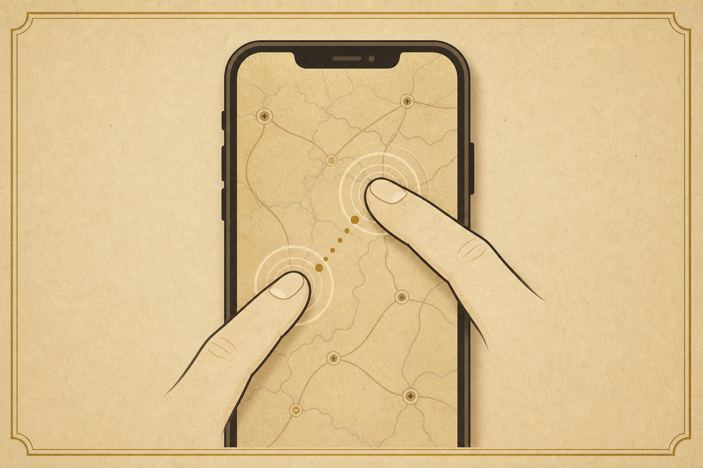

Story Guide · Western History Network
跟着一条故事线进入西方历史
像看一部会移动的历史纪录片：讲到哪里，地图就聚焦到哪里。
故事主线
地图聚焦
来源阅读
自由探索
还没有保存进度，可以先从第一条故事线开始。
Story Guide · Western History Network
像看一部会移动的历史纪录片：讲到哪里，地图就聚焦到哪里。
还没有保存进度，可以先从第一条故事线开始。

拖动地图浏览，双指捏合缩放
Landscape View
横屏会更适合这张长时间轴地图。你也可以继续竖屏浏览、拖拽和缩放。